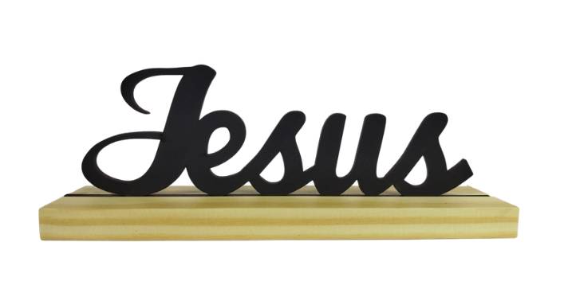

Este catálogo digital tem como objetivo centralizar o mostruário de peças decorativas em MDF sob medida, facilitando a visualização por categorias e agilizando a solicitação de orçamentos online.
| Categoria / Modelo | Dimensões Padrão | Espessura do MDF |
|---|---|---|
| Quadro Decorativo Vazado | 20cm x 30cm | 3mm |
| Quadro Decorativo Grande | 50cm x 70cm | 3mm |
| Letreiro Decorativo com Suporte | 25cm x 10cm | 2.5mm |


Confira mais referências de decoração e tendências no Pinterest Brasil.